第 18 讲：在线游戏架构——从网络协议到状态同步
把「联机」拆成可工程化的层次：协议、时钟、RPC、拓扑与同步策略
◆ 学完这一讲，你应该能
能说清在线游戏面临的五大挑战（一致性、可靠性、安全、多样性、复杂性）分别对应哪些架构选择
能区分 TCP 与 UDP 的取舍，并解释为什么游戏常用「可靠 UDP」而不是直接用 TCP
能描述 ARQ（停等/回退 N/选择重传）与 FEC（XOR/Reed-Solomon）如何组合成混合可靠传输
能解释 NTP 与基于流的时间同步如何估计客户端与服务器的时钟偏差
能对比快照同步、确定性帧同步、状态同步（含客户端预测与服务器校正）的适用场景与代价
能识别帧同步中的确定性陷阱（浮点、随机数）并给出定点数与种子化随机的工程解法
核心结论速记
联机游戏的核心矛盾是「一致性 vs 响应性」，所有同步方案都是在这条轴上做取舍。
TCP 可靠但队头阻塞、重传延迟不可控；UDP 快但会丢包乱序，所以游戏普遍在 UDP 上自建可靠层。
可靠 UDP = ARQ（ACK/序列号/滑动窗口/重传）+ FEC（冗余包，用带宽换延迟），按场景混合使用。
时钟同步是联机的地基：NTP 用四次时间戳估计偏移与 RTT，流式同步则持续采样剔除高延迟样本。
网络拓扑从纯 P2P、主机式 P2P 到专用服务器（Dedicated Server），权威性与作弊难度依次提高。
快照同步简单但带宽高、有抖动；帧同步带宽极低但要求严格确定性，浮点与随机数是最大敌人。
状态同步由服务器授权，客户端预测 + 服务器校正（回滚重放）解决「哑客户端」手感问题。
帧同步难防作弊（服务器无法验证客户端模拟），状态同步天然更适合 PVP 竞技。
011. 为什么联机这么难：五大挑战与全讲地图
单机游戏里，玩家输入 → 游戏逻辑 → 渲染，全在一台机器上，顺序确定、延迟为零。一旦联机，这条链被网络劈成两半，问题就全冒出来了。课件把挑战归纳为五类：
- 一致性（Consistency）：所有玩家看到的游戏世界必须一致，否则「我明明打中了」就会变成争吵。
- 可靠性（Reliability）：网络会丢包、乱序、抖动，甚至断线，游戏不能因此崩溃。
- 安全（Security）：作弊者会改内存、改包、重放包；服务器必须能辨别谁说了算。
- 多样性（Diversities）：平台、网络环境、地区、设备性能千差万别。
- 复杂性（Complexities）：以上问题叠加，架构会迅速膨胀。 \n这一讲的地图大致是：先补网络基础（协议分层、Socket、TCP/UDP），再讲怎么在 UDP 上造可靠传输（ARQ、FEC），接着是时钟同步与 RPC，然后是网络拓扑（P2P vs 专用服务器），最后是重头戏——游戏同步的三大流派：快照同步、帧同步（Lockstep）、状态同步（State Synchronization），以及帧同步的确定性问题与状态同步的客户端预测/服务器校正。 \n读这一讲要始终带着一个问题：这个机制是在用带宽、延迟、CPU 还是开发复杂度，换哪一个体验指标？ 想清楚这个，后面所有方案就不是死记硬背，而是一张取舍表。
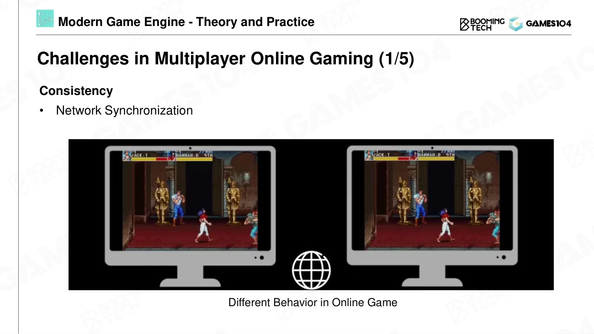
常见坑
把「一致性」理解成「所有客户端画面逐帧相同」→ 实际只要求游戏逻辑状态一致，渲染可以插值/预测 → 排查同步 bug 时先分清是逻辑不一致还是表现不一致。
UE / Unity 落地
UE 的
UGameInstance/NetDriver体系就是围绕「权威服务器 + 客户端复制」建的，理解五大挑战有助于看懂Replication为什么有那么多开关。Unity 的 Netcode for GameObjects / Mirror 同样把「服务器授权」作为默认范式，P2P 只是可选拓扑。
022. 网络基础：分层、Socket 与 TCP/UDP 的真实性格
两台 PC 要通信，必须先约定「说什么语言」（协议）、「怎么找到对方」（地址与端口）。课件从互联网之父设计 TCP/IP 讲起，核心思想是分层：应用层（HTTP、SSH、FTP、游戏协议）不关心底下怎么传，中间层（TCP/UDP）负责端到端，网络层（IP）负责寻址路由，链路层负责物理传输。OSI 七层模型是同一思想的更细版本。
\n落到编程，就是 Socket：一个网络节点的软件结构，本质是「IP + 端口 + 协议」的句柄。客户端和服务器都要先 socket() 创建、bind() 绑定地址端口、listen()/connect() 建立关系，然后 send()/recv() 收发。
\n两种传输协议性格截然不同：
- TCP：面向连接、可靠、有序。它用序列号 + ACK + 超时重传保证不丢，用拥塞控制（拥塞窗口 CWND、慢启动、快重传/快恢复）保证不把网络打爆。代价是队头阻塞：前一个包没到，后面的包即使到了也要等着，重传延迟不可预测。
- UDP：无连接、不可靠、不保序，头部只有 8 字节，发出去就不管。快、轻，但丢包乱序全得自己处理。 \n课件的结论很直接：游戏通常不适合直接用 TCP，因为游戏状态是「最新的才有意义」，一个 200ms 前的旧包重传到了也没用，反而堵住后面的新包。所以业界普遍选择「在 UDP 上自建可靠层」，也就是下一节的主题。
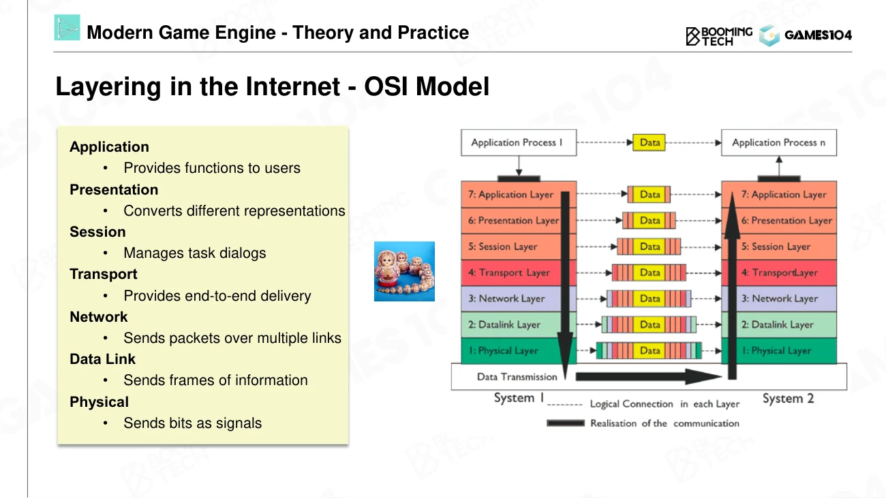
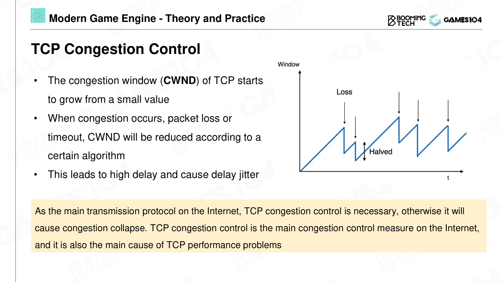
补充说明
课件中 TCP 拥塞控制的具体公式（CWND 增长规则）在幻灯片里以图为主，这里只描述其行为，不硬写公式。
常见坑
以为 UDP 一定比 TCP 快 → 在无丢包、小数据量时差距不大，UDP 的优势是「不被旧包堵住」和「可控重传策略」→ 选型要看延迟敏感度而非盲目 UDP。
Socket 编程里
recv返回 0 被当成「收到空数据」→ 实际表示对端关闭连接 → 要单独处理断线逻辑。
UE / Unity 落地
UE 的
UNetDriver底层默认走 UDP，自己实现了可靠通道（Reliable标记的 RPC/属性复制），正是「可靠 UDP」的工业实现。Unity 的传输层（如 Unity Transport）同样基于 UDP，提供 reliable/unreliable 两种 pipeline。
033. 在 UDP 上造可靠：ARQ、滑动窗口与 FEC 的混合拳
既然直接用 TCP 不行、裸 UDP 又太野，工程上的答案是自定义可靠 UDP。课件把它拆成两套互补机制。
第一套：ARQ（自动重传请求），靠反馈重传。基础三件套是：
- ACK + 序列号：接收方确认收到哪些序号，发送方据此知道谁丢了。
- 超时重传：等不到 ACK 就重发。
-
滑动窗口：一次发多个包（窗口大小 N），不必停等，提高吞吐。 \n三种经典 ARQ 策略：
-
停等（Stop-and-Wait）：窗口=1，发一个等一个 ACK，简单但吞吐低。
- 回退 N（Go-Back-N）：接收方只按序收，丢一个就把后面全丢，发送方从丢失处重发整个窗口。
- 选择重传（Selective Repeat）：接收方缓存乱序包，只重传真正丢的那几个，效率最高但实现最复杂。
第二套：FEC（前向纠错），靠冗余换延迟。发数据的同时多发几个校验包，丢包时不用等重传，直接用冗余恢复。
- XOR-FEC：最简单，\(C = A \oplus B\)，丢了 A 就用 \(A = C \oplus B\) 恢复。一组里只能恢复一个丢包。
- Reed-Solomon：把 N 个数据块乘一个编码矩阵得到 M 个校验块，任意丢不超过 M 个都能通过解矩阵方程恢复，代价是计算量和带宽。 \n工程上通常混合：小丢包用 FEC 兜底（避免重传延迟），持续丢包再走 ARQ 重传，同时根据网络质量动态调整冗余比例。这就是「可靠 UDP」的真实形态。
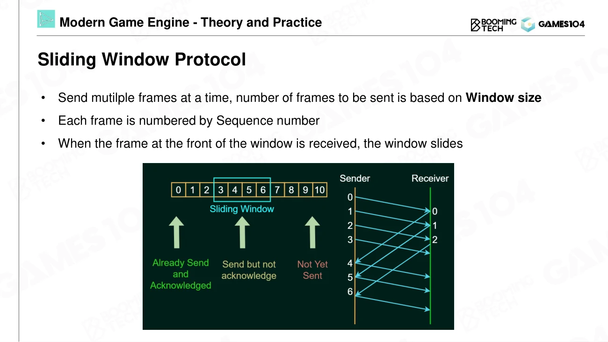
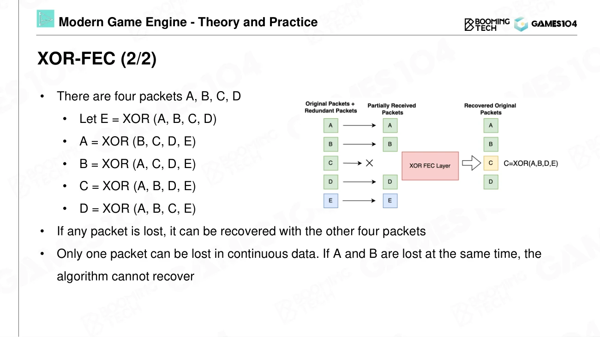
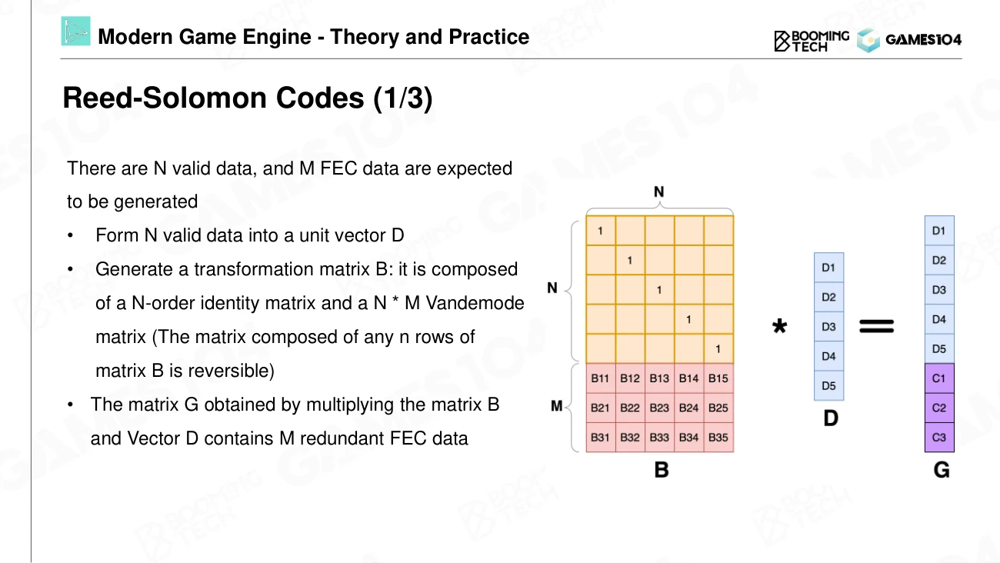
常见坑
FEC 冗余开太大 → 带宽翻倍但丢包率没降多少 → 冗余比例应随实测丢包率动态调整，而不是固定值。
滑动窗口序号回绕处理错误（如 16 位序号绕回）→ 新旧包混淆 → 比较序号时用模运算差值而非直接大小比较。
XOR-FEC 一组丢两个包还想恢复 → 数学上不可能 → 要么减小分组、要么换 Reed-Solomon。
UE / Unity 落地
UE 的可靠通道内部就是序列号 + ACK + 重传，
bReliable的 RPC 走的就是这条路径；不可靠属性复制则可能丢。实时语音/视频（如 UE 的 Voice、WebRTC）大量使用 FEC，思路与本讲一致。
XOR-FEC 恢复伪代码（cpp）
// 发送端：A、B 两个数据包，生成校验包 C\nPacket C = xor_packets(A, B);
// 接收端：若只丢了 A\nif (!received(A) && received(B) && received(C)) {
A = xor_packets(B, C); // 恢复
}044. 时钟同步：NTP 与流式估计，联机的地基
联机里「现在几点」不是哲学问题，而是工程问题：客户端和服务器时钟不一致，就没法判断「这个输入是早还是晚」，也没法做延迟补偿。 \n先定义 RTT（往返时延）：从发出到收到回应的时间，包含发送/接收处理、传播延迟、排队延迟。RTT 的一半常被当作单程延迟的估计。
NTP（网络时间协议） 的思路很巧：客户端记录 \(t_0\)（发出请求）、服务器记录 \(t_1\)（收到）和 \(t_2\)（发出响应）、客户端记录 \(t_3\)（收到响应）。假设往返路径对称，则： \[ \text{offset} = \frac{(t_1 - t_0) + (t_2 - t_3)}{2} \] \[ \text{RTT} = (t_3 - t_0) - (t_2 - t_1) \]\noffset 就是客户端时钟相对服务器的偏差，校正它即可。NTP 服务器还分层级（Stratum），Stratum 0 是原子钟/GPS，逐级向下，层级越低越准。 \n但 NTP 假设路径对称，实际网络不对称，单次测量误差可能几十毫秒。游戏里更常用基于流的时间同步：持续发送时间戳包，收集大量 (offset, RTT) 样本，剔除高延迟样本（因为高 RTT 样本的对称性假设更不可靠），再对剩余样本取平均或最小值，得到稳定估计。 \n时钟同步做不准，后面的预测、回滚、延迟补偿全是空中楼阁——这是很多联机 bug 的隐藏根因。
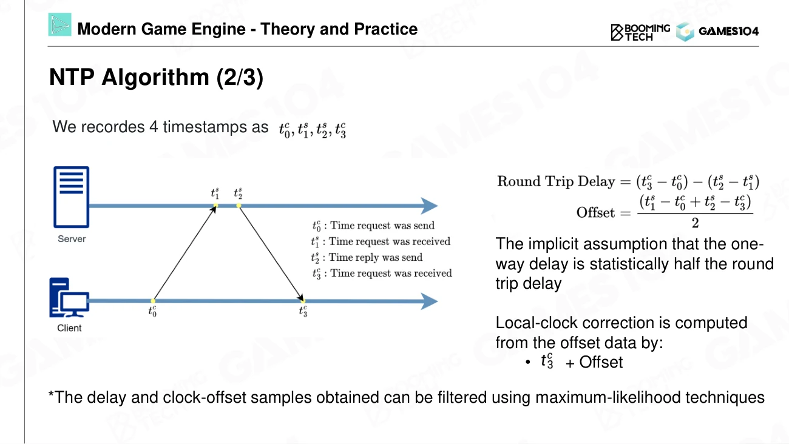
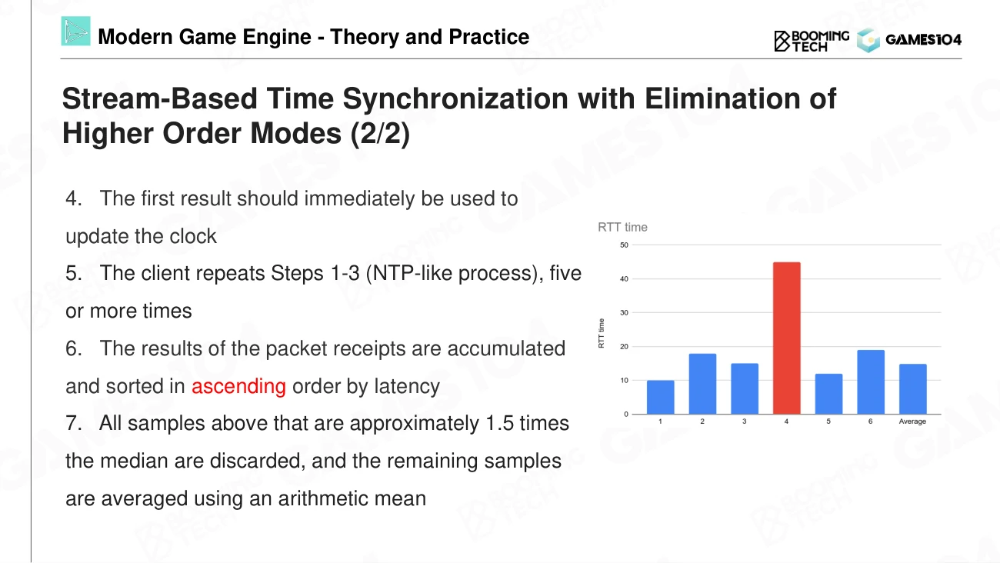
补充说明
课件中 NTP 举例的具体数值（某天某时的 t0~t3）属于演示，不必记忆，掌握公式即可。
常见坑
只用一次 NTP 测量就定偏移 → 单次样本受抖动影响大 → 应多次采样并取稳健统计量（中位数/最小值）。
把 RTT/2 直接当单程延迟用于延迟补偿 → 上下行不对称时误差大 → 高要求场景需分别估计上下行或接受误差。
客户端时钟被系统自动校时（NTP 跳变）→ 游戏内时间线断裂 → 游戏应使用单调时钟（monotonic clock）而非墙钟。
UE / Unity 落地
UE 的
GetWorld()->GetTimeSeconds()是游戏时间，网络同步时应基于服务器时间做换算，而不是直接比较各端本地时间。Unity 的
Time.time同样受帧率影响，联机逻辑应使用服务器下发的权威时间戳。
055. 从 Socket 到 RPC：让网络调用像本地函数
直接用 Socket 编程很痛苦：要手写序列化、处理粘包、管理连接、写一堆 if-else 分发消息类型。课件把这叫「still not great」。于是有了消息通信的抽象：客户端发「嘿，做件事」，服务器回结果，而不是直接操作字节流。 \n再往上就是 RPC（远程过程调用）：让调用远程函数像调用本地函数一样自然。它本质是请求-响应模型，核心组件有三样：
- IDL（接口定义语言）：服务器用 IDL 声明服务接口（函数名、参数、返回类型），与语言无关。
- Stub（桩）：客户端桩看起来像本地函数，内部把参数序列化后发网络；服务器桩接收后反序列化并调用真正的实现。
- Stub 编译器：读 IDL 自动生成客户端和服务器两端的桩代码，省去手写序列化。 \n一次 RPC 的旅程大致是：客户端调用桩 → 序列化（marshalling）→ 网络传输 → 服务器桩反序列化 → 调用实现 → 结果原路返回。 \nRPC 解决的是「逻辑通信」的易用性，但它不解决延迟、丢包、重复调用（幂等性）等问题——这些仍要上层处理。游戏里 RPC 常用于「开火」「使用技能」这类事件通知，而持续变化的状态（位置、血量）更适合用状态复制而非每帧 RPC。
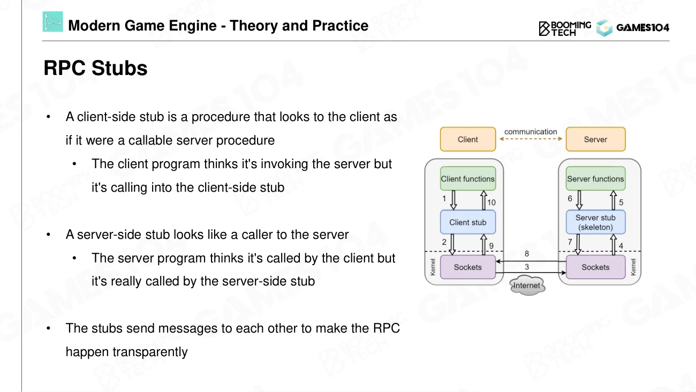
常见坑
把高频状态（每帧位置）用 RPC 发 → 消息量爆炸且不可靠时状态丢失 → 高频状态应用状态复制/快照，RPC 只用于事件。
RPC 不处理重复包 → 同一开火请求被执行两次 → 需要请求 ID 做去重（幂等）。
UE / Unity 落地
UE 的
UFUNCTION(Server/Client/NetMulticast)就是引擎内建的 RPC 机制，Reliable关键字对应可靠传输。Unity 的 Netcode 用
[ServerRpc]/[ClientRpc]特性实现同类语义。
066. 网络拓扑：P2P、主机式与专用服务器
谁来当「真相的来源」，决定了拓扑。
- 纯 P2P：每个客户端把游戏事件广播给其他所有客户端，没有中心。实现简单、延迟低（直连），但 N 个玩家就有 \(O(N^2)\) 条连接，作弊无法监管，掉线影响大。
- 主机式 P2P（Host Server）：选一个玩家当「主机」，其他人连他。省服务器成本，但主机玩家有天然优势（延迟为零），主机掉线整局崩。
- 专用服务器（Dedicated Server）：独立服务器跑游戏世界，拥有权威（Authority），负责模拟、分发状态、裁决冲突。成本高，但公平、防作弊、可扩展。 \n课件的对比结论：P2P 易维护、成本低，适合休闲/局域网；专用服务器权威性强、适合竞技。当玩家跨国、RTT 太高时，还需要区域服务器/边缘节点来降低延迟。 \n这里的关键概念是权威（Authority）：谁有权修改游戏状态。单机时本地就是权威；联机后权威必须集中，否则各说各话。后面所有同步方案，本质都是在回答「权威在谁那、其他人怎么跟上」。
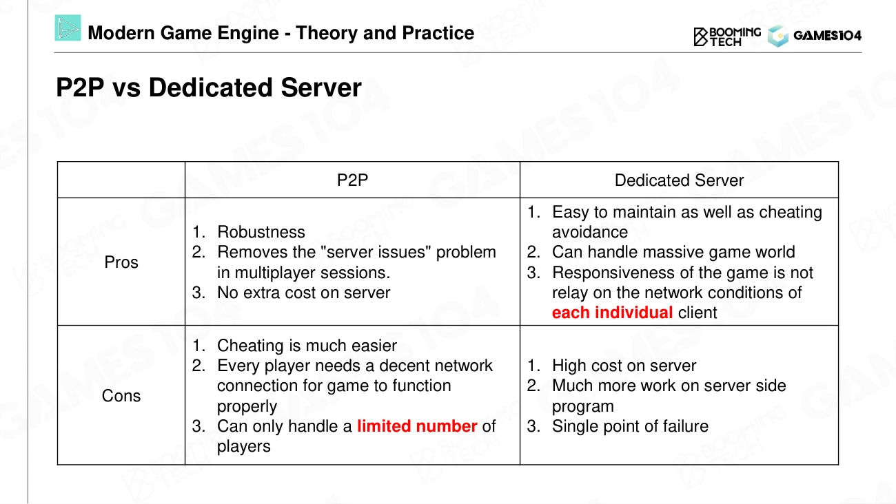
常见坑
主机式 P2P 里主机玩家延迟优势被忽视 → 竞技不公平 → 排位赛应使用专用服务器。
以为专用服务器就一定延迟低 → 服务器物理位置远照样高 RTT → 需要就近部署/多区域。
UE / Unity 落地
UE 的 Dedicated Server 构建目标（
Servertarget）就是专用服务器，客户端通过Open连接。Unity 的 Dedicated Server 构建选项 + Relay/中继服务是同类方案。
077. 同步三大流派：快照、帧同步与状态同步
这是全讲的核心。课件把同步方法分为三类：
快照同步（Snapshot Synchronization）：客户端把输入发给服务器，服务器按 tick 模拟，定期把整个世界状态的快照发给客户端，客户端渲染。问题是快照到达有抖动（jitter），直接渲染会卡顿，于是用快照插值（延迟一小段时间，在两个快照间插值）平滑；再用增量压缩（只发与上一快照的差异）省带宽。优点是实现直接、服务器权威；缺点是带宽高、客户端只是「看客」。
帧同步（Lockstep Synchronization）：起源于军事模拟，核心是「所有人必须同步推进，没有人能单独前进」。客户端只发输入，服务器（或所有客户端）收集齐同一帧所有输入后，各自用相同的确定性逻辑模拟出相同结果。带宽极低（只传输入），天然适合 RTS。代价是：必须严格确定性——同样的输入必须得到逐位相同的结果。
状态同步（State Synchronization）：服务器授权游戏世界，把状态复制给客户端。客户端不能直接改状态，只能发请求。问题是「哑客户端」：等服务器回应期间画面是冻结的。解法是客户端预测（本地先按输入模拟）+ 服务器校正（服务器结果回来后，若与预测不符，回滚到服务器状态并重放未确认的输入）。这是 FPS/竞技游戏的标配。 \n三者不是互斥的，很多游戏混用：位置用状态同步，事件用 RPC，回放用帧同步思路。
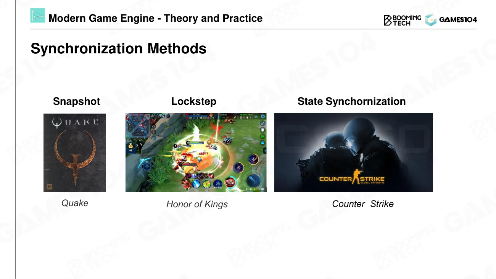
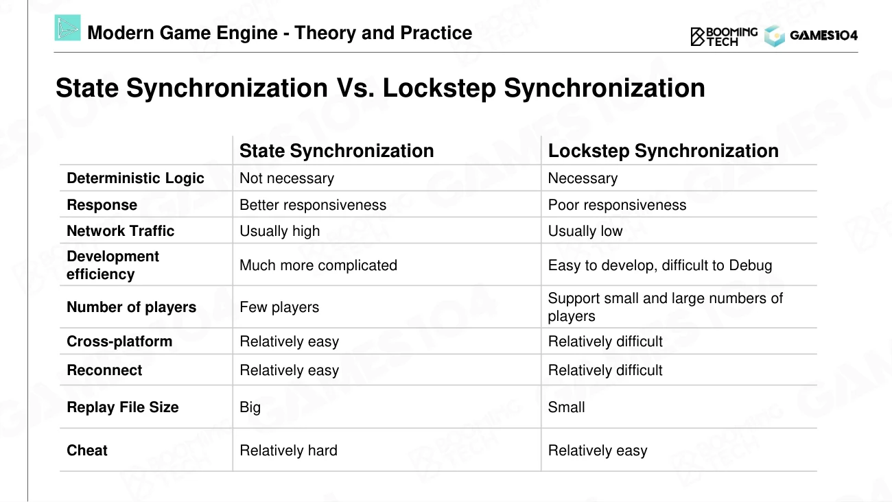
常见坑
以为帧同步带宽低就万能 → 它对确定性要求极高，浮点/随机数一崩全盘皆输 → 非 RTS 品类慎用。
状态同步里客户端直接改本地状态不做校正 → 客户端与服务器长期漂移 → 必须实现服务器校正与回滚。
UE / Unity 落地
UE 的 Actor Replication 是状态同步的典型：服务器改属性，客户端收到
OnRep回调。UE 的
CharacterMovementComponent内建客户端预测与服务器校正，是学习状态同步的活教材。
088. 帧同步的命门：确定性、浮点与随机数
帧同步的优雅建立在「确定性」上：相同输入 + 相同初始状态 = 相同结果。但计算机偏偏不保证这点。
浮点数是头号杀手。IEEE 754 浮点在不同 CPU、不同编译器优化、不同指令集（x87 80 位中间精度 vs SSE）下，舍入可能不同，累积几百帧后位置就分叉了。课件给的解法是定点数（Fixed-point）：用整数表示小数（例如 1/1024 为最小单位），所有运算走整数，跨平台逐位一致。代价是范围与精度受限、需要自己实现数学库。
随机数是二号杀手。游戏的随机数其实是伪随机：给定种子，序列确定。若各客户端用不同种子或调用次数不同，结果就分叉。解法是：随机数种子由服务器统一分发，且所有随机调用必须走同一套确定性序列，不能在表现层（如粒子特效）里偷用同一随机源。 \n此外还有：容器遍历顺序（哈希表）、未初始化内存、多线程竞争、物理引擎的非确定性，都会破坏一致性。工程上用校验和（checksum）定期比对各端状态，一旦不一致就记录日志、定位分叉帧。 \n课件也点出帧同步的作弊难题：服务器只转发输入、不模拟，无法验证客户端上报的结果，所以 PVP 竞技更倾向状态同步。
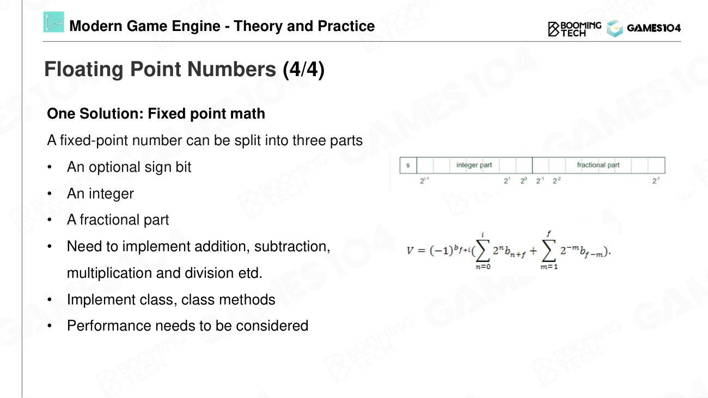
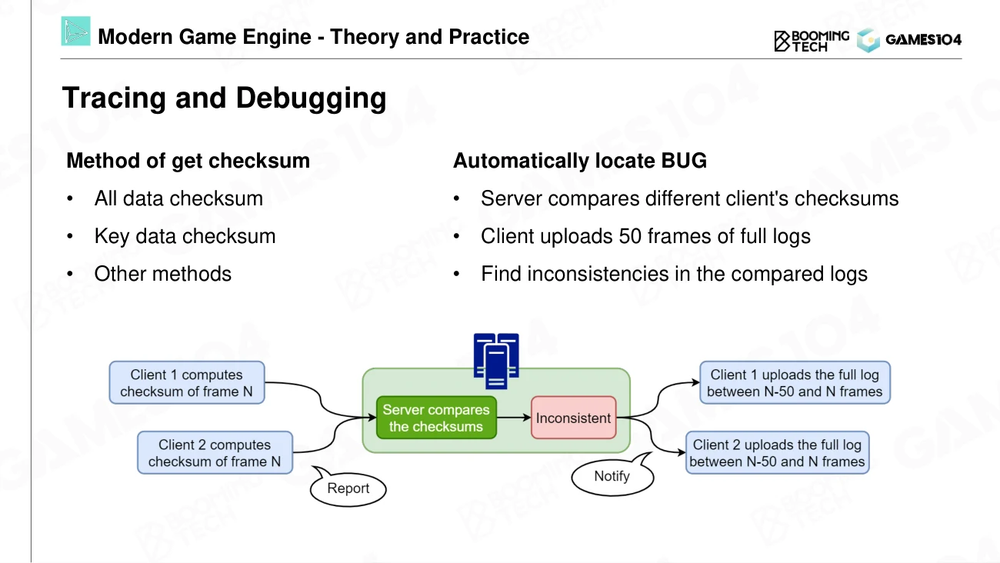
常见坑
逻辑层混用
float做位置积分 → 几十帧后各端分叉 → 逻辑层全部改用定点数或整数。表现层（特效、音效）调用与逻辑层同一个随机源 → 随机序列被打乱 → 逻辑随机与表现随机必须分离。
用哈希表遍历顺序驱动逻辑 → 不同平台顺序不同 → 逻辑容器改用数组/有序结构。
UE / Unity 落地
UE 的
FRandomStream是确定性随机流，适合帧同步逻辑；FMath::Rand则依赖全局状态，不适合。Unity 的
System.Random给定种子可复现，但UnityEngine.Random是全局状态，帧同步逻辑应避免。
099. 状态同步的工程细节：预测、校正与重连
状态同步的骨架是：服务器权威模拟，客户端发输入、收状态。但直接这么做，玩家会感觉「按了键要等一个 RTT 才动」，这就是哑客户端问题。
客户端预测（Client-side Prediction）：客户端按下输入后，立刻在本地按同样规则模拟一遍，画面马上响应。同时把输入存入环形缓冲（ring buffer），并记录每个输入对应的预测状态。
服务器校正（Server Reconciliation）：服务器按自己的节奏模拟，把权威状态和「已处理到哪个输入序号」发回客户端。客户端收到后：
- 若自己的预测与服务器一致，丢弃已确认的输入，继续预测；
-
若不一致（例如被障碍物挡住），回滚到服务器状态，然后重放环形缓冲里所有尚未被服务器确认的输入，得到新的预测状态。 \n这样玩家既感受到即时响应，又最终与服务器收敛。课件以《守望先锋》为例：RTT 160ms 时，半 RTT 80ms 的预测让操作不粘手。 \n还有两个配套问题：
-
丢包：客户端输入包丢了，服务器没收到，校正时会出现「输入缺失」。解法是输入带序号、服务器 ACK，客户端重发未确认输入。
- 重连：客户端掉线后重连，需要追帧。服务器定期保存状态快照，客户端从最近快照恢复，再快进重放缺失的输入，追上当前时刻。 \n状态同步与帧同步的取舍：状态同步带宽较高但服务器可验证、防作弊强；帧同步带宽极低但难防作弊。竞技 PVP 选前者，大规模 RTS/回放选后者。
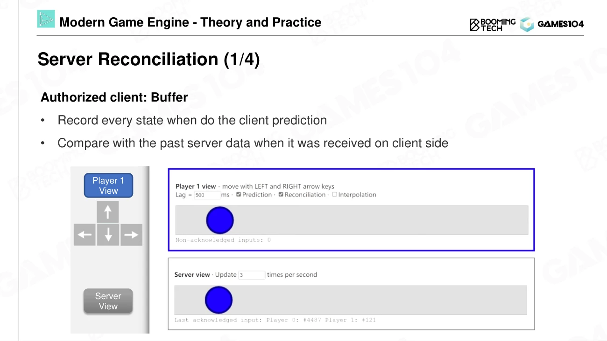
补充说明
课件中《守望先锋》的 RTT=160ms 是举例数值，用于说明预测收益，不必当作固定参数。
常见坑
预测与服务器使用不同的移动参数（速度、加速度）→ 永远对不上、频繁回滚 → 预测逻辑必须与服务器共用同一份代码/配置。
环形缓冲太小 → 高延迟时未确认输入被覆盖 → 缓冲大小要覆盖最大 RTT 对应的输入数。
重连后直接瞬移到服务器位置 → 玩家看到跳变 → 应追帧重放或做平滑过渡。
UE / Unity 落地
UE 的
CharacterMovementComponent的ServerMove/ClientAdjustPosition就是预测 + 校正的完整实现，可在源码里对照本节流程阅读。Unity 的 Netcode 提供
NetworkTransform与客户端预测示例，思路相同。
引擎对照表
| 概念 / 效果 | Unreal Engine | Unity |
|---|---|---|
可靠 UDP 传输 | UNetDriver 内建可靠通道， | Unity Transport 的 ReliablePipeline |
RPC |
|
|
状态复制 | Actor Replication + |
|
客户端预测与校正 |
| Netcode 客户端预测示例 / 自实现 |
确定性随机 |
|
|
专用服务器 | Dedicated Server 构建目标 | Dedicated Server 构建 + Relay |
术语双语表
| English | 中文 | 说明 |
|---|---|---|
| RTT | 往返时延 | 一个包从发出到收到回应的时间，常被用作延迟估计。 |
| ARQ | 自动重传请求 | 靠 ACK 与超时重传保证可靠，含停等/回退 N/选择重传。 |
| FEC | 前向纠错 | 发冗余包，丢包时无需重传即可恢复，用带宽换延迟。 |
| NTP | 网络时间协议 | 用四次时间戳估计时钟偏移与 RTT。 |
| RPC | 远程过程调用 | 让远程调用像本地函数，靠 IDL 与 Stub 生成。 |
| Lockstep | 帧同步 | 只传输入，各端用确定性逻辑模拟出相同结果。 |
| Snapshot | 快照同步 | 服务器定期发送世界状态，客户端插值渲染。 |
| Client-side Prediction | 客户端预测 | 本地先模拟输入以消除等待感。 |
| Server Reconciliation | 服务器校正 | 服务器结果与预测不符时回滚重放未确认输入。 |
| Determinism | 确定性 | 相同输入必得相同结果，帧同步的前提。 |
课后练习
01 为什么实时动作游戏通常不直接用 TCP，而选择在 UDP 上自建可靠层？请从队头阻塞和重传价值两个角度回答。
查看答案
提示：
想想一个 200ms 前的旧包重传到了还有没有用。
TCP 保证有序，前一个包丢失会阻塞后续包（队头阻塞），重传延迟不可控；而游戏状态是「最新才有意义」，旧包重传到达时已经过时，反而占用带宽、堵住新包。UDP 允许丢弃过时数据、自定义重传策略（只重传关键事件）、并用 FEC 降低重传需求，因此更适合实时游戏。
02 NTP 中客户端记录 t0=1000ms（发出）、服务器 t1=1050ms（收到）、t2=1052ms（发出）、客户端 t3=1110ms（收到）。求时钟偏移 offset 与 RTT。
查看答案
提示：
offset = ((t1-t0)+(t2-t3))/2，RTT = (t3-t0)-(t2-t1)。
offset = ((1050-1000)+(1052-1110))/2 = (50 + (-58))/2 = -4ms，即客户端时钟比服务器快 4ms（需减 4ms 校正）。RTT = (1110-1000)-(1052-1050) = 110-2 = 108ms。
03 帧同步中，两个客户端用 float 做位置积分，跑 500 帧后位置出现微小差异并逐渐放大。请给出至少两条根因与对应解法。
查看答案
提示：
浮点舍入、随机数、容器顺序。
根因一：不同 CPU/编译器的浮点舍入不一致，误差累积放大。解法：逻辑层改用定点数（整数缩放）。根因二：随机数种子或调用次数不一致。解法：服务器统一种子，逻辑随机与表现随机分离。根因三：哈希表遍历顺序不同。解法：逻辑容器改用数组/有序结构。并用校验和定期比对定位分叉帧。
04 状态同步中，客户端预测后收到服务器校正，发现位置不一致。请描述客户端应执行的步骤。
查看答案
提示：
回滚 → 重放未确认输入。
1) 将本地状态回滚到服务器下发的权威状态；2) 从环形缓冲中取出所有「服务器尚未确认」的输入；3) 按顺序重放这些输入，重新模拟得到新的预测状态；4) 丢弃已被服务器确认的输入，继续预测。若输入有丢失，需按序号重发未确认输入。
05 为一个 4 人合作的 PVE 射击游戏选同步方案：要求低延迟手感、服务器能防作弊、带宽可接受。请给出你的架构选择并说明理由。
查看答案
提示：
权威在谁那？手感靠什么？
选专用服务器 + 状态同步 + 客户端预测/服务器校正。理由：PVE 虽作弊压力小，但服务器权威仍能保证一致性；射击游戏对操作手感敏感，客户端预测消除等待感；状态同步带宽高于帧同步但可接受，且服务器可验证关键结果。事件（开火、技能）用可靠 RPC，高频位置用不可靠状态复制 + 插值。